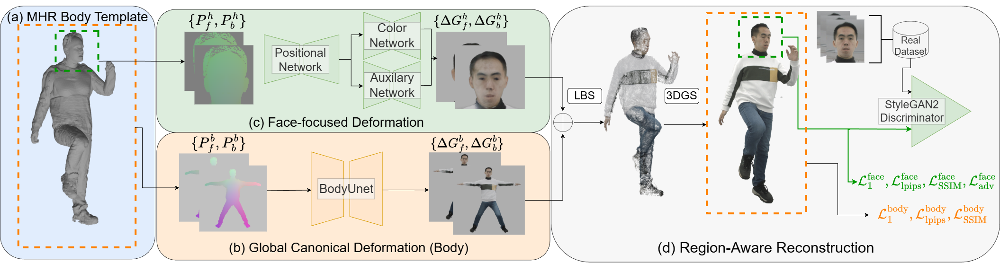
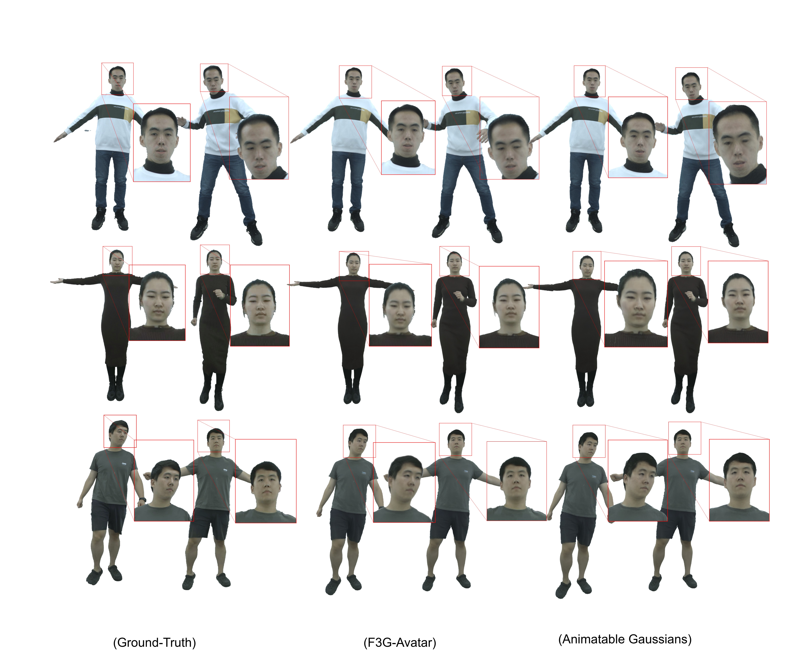

CVPRW 2026
AIMS Group, Dept. of Electrical Engineering, Eindhoven University of Technology
F3G-Avatar is a face-aware full-body avatar synthesis method for reconstructing realistic, animatable human representations from multi-view RGB videos. Starting from a clothed Momentum Human Rig (MHR) template, it renders front and back positional maps that are decoded into 3D Gaussians through a two-branch architecture: a body branch that models pose-dependent non-rigid deformations and a face-focused branch that refines facial geometry and appearance. The predicted Gaussians are fused, posed using linear blend skinning, and rendered via differentiable Gaussian splatting. Training combines reconstruction and perceptual objectives with a face-specific adversarial loss, enabling high-fidelity rendering while preserving fine-grained facial details and expressions. F3G-Avatar achieves strong visual quality on challenging avatar synthesis benchmarks and provides a practical pipeline for realistic full-body digital humans.

Overview of the F3G-Avatar pipeline. Multi-view images and regressed poses are used to generate an MHR clothed template, which is encoded into body and face positional maps and subsequently rendered as posed Gaussian avatars.

F3G-Avatar displays state-of-the-art rendering quality by delivering improved facial details.
@misc{menu2026f3gavatarfacefocused,
title={F3G-Avatar : Face Focused Full-body Gaussian Avatar},
author={Willem Menu and Erkut Akdag and Pedro Quesado and Yasaman Kashefbahrami and Egor Bondarev},
year={2026},
eprint={2604.09835},
archivePrefix={arXiv},
primaryClass={cs.CV},
url={https://arxiv.org/abs/2604.09835},
}